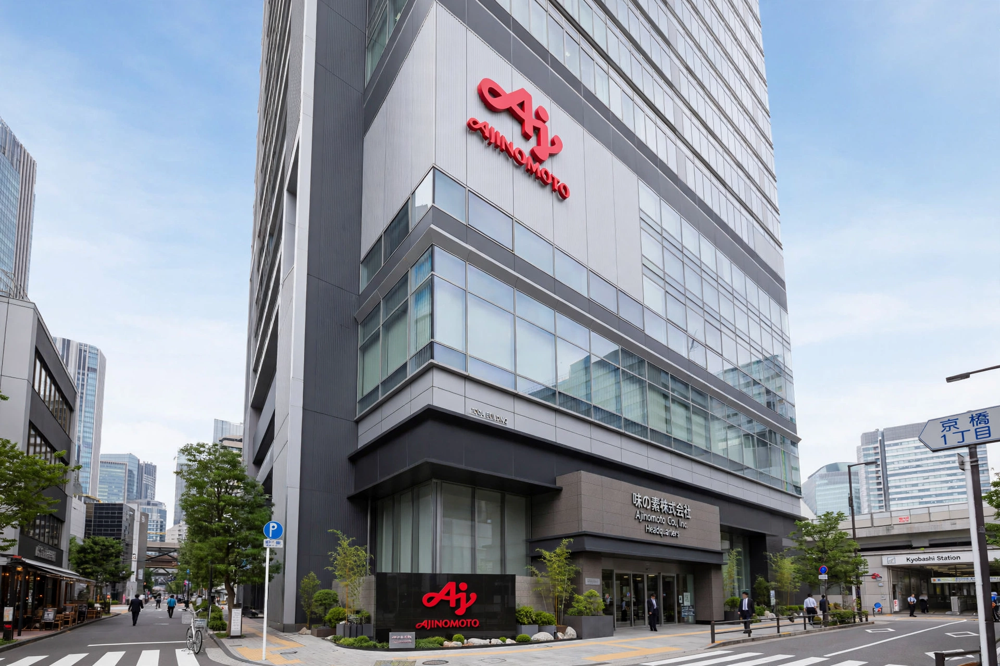

Ajinomoto Co., Inc. (味の素株式会社, Ajinomoto Kabushiki-gaisha) is a Japanese multinational food and biotechnology corporation which produces seasonings, cooking oils, frozen foods, beverages, sweeteners, amino acids, and pharmaceuticals. Its headquarters are in Chūō, Tokyo. The name Ajinomoto translates roughly as "essence of taste" and was the trade name for the company's original monosodium glutamate (MSG) product.
 | |
| Type | Public (TYO: 2802) |
|---|---|
| Industry | Food processing, biotechnology |
| Founded | 1909 (incorporated 1917) |
| Founders | Kikunae Ikeda; Saburosuke Suzuki |
| Headquarters | Chūō, Tokyo, Japan |
| Products | Seasonings, MSG, frozen foods, amino acids |
In 1908 the chemist Kikunae Ikeda of Tokyo Imperial University identified the taste of glutamic acid in kombu (kelp) broth as a distinct basic taste, which he named umami. Ikeda obtained a patent for producing the seasoning from glutamate and partnered with the businessman Saburosuke Suzuki to commercialise it. The company was founded in 1909 and began selling the MSG seasoning under the Ajinomoto brand.
The company expanded across Asia in the 1930s and into the Americas and Europe after the Second World War. Ajinomoto diversified into other amino-acid products, processed and frozen foods, sweeteners such as aspartame, and feed-grade amino acids such as lysine and threonine, in which it became a world leader. In 2014 it acquired the American frozen-food maker Windsor Quality Food Company.
The group's best-known product remains the umami seasoning Ajinomoto (MSG), sold worldwide. Other lines include the Japanese soup-stock brand Hondashi, Knorr products in Japan (under licence), the Brazilian seasoning Sazón, frozen gyōza and other convenience foods, and the aminoVITAL sports supplements.
From Wikipedia, the free encyclopedia.